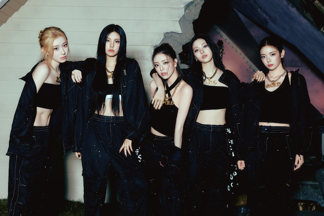
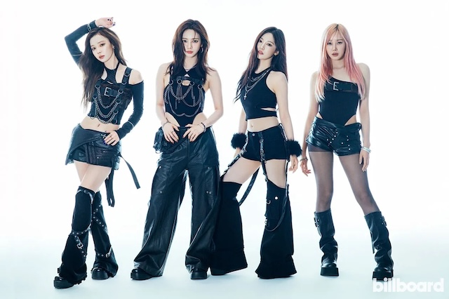

STRAY KIDS
ABOUT
Stray Kids is a South Korean boy group formed by JYP Entertainment via a reality survival show in 2017; they officially debuted in 2018. The members are Bang Chan (group leader, part of the producing sub-unit 3RACHA), Lee Know, Changbin (also 3RACHA), Hyunjin, Han (3RACHA), Felix, Seungmin, and I.N. Their style blends K-pop with hip hop, EDM, rock, experimental/dance elements, often with strong self-producing involvement. Originating in Seoul, they rose quickly in both Korean and global charts, known for intense performances and strong concept or thematic albums.
DISCOGRAPHY
As of August 2025, Stray Kids has released 6 studio albums, 1 repackage album, 4 best albums, 13 mini albums, 1 extended play, 3 singles, 11 digital singles, 7 OSTs, 5 remixes, 5 collaboration singles, and 1 skzhop hiptape. Some of their signature tracks include “God's Menu”, “Back Door”, “MIROH”, “District 9”, “Maniac”, “S-Class”, “Lose My Breath” (feat. Charlie Puth), “Chk Chk Boom”.
TOUR ALERT
Stray Kids just finished their latest tour. The DominAte World Tour, which supported their album GIANT, included shows across Asia, North America, Europe, and more!
ATEEZ
ABOUT
ATEEZ, a South Korean boy group under KQ Entertainment, debuted in October 2018. The band, comprised of eight members, includes Hongjoong (group leader and head producer), Seonghwa, Yunho, Yeosang, San, Mingi, Wooyoung, and Jongho. Their musical style includes K-pop with influences from hip hop, EDM, performance theatrics & strong stage presence, and often include high energy and conceptual storytelling. Though originating in Seoul, South Korea, ATEEZ has expanded their global footprint, charting outside Korea and partaking on huge international tours.
DISCOGRAPHY
Currently, ATEEZ has released 4 full-length studio albums, 13 mini albums, 1 compilation album, 4 single albums, 1 soundtrack album, 1 digital single, and 1 repackaged album. Some fan favorites and streaming hits include “Wave”, “Say My Name”, “Wonderland”, “Deja Vu”, “Answer”, and “HALA HALA (Hearts Awakened, Live Alive)”. More recent hits include “Ice on My Teeth”, “Lemon Drop”, and “In Your Fantasy”.
TOUR ALERT
ATEEZ is currently touring! Their latest world tour, the In Your Fantasy Tour, includes 4 legs with shows spanning across South Korea, Japan, North America and parts of Asia & Australia. To view all show dates, locations, and learn more on how to purchase tour tickets, please visit the official ATEEZ website.
ITZY
ABOUT
ITZY, a South Korean girl group formed by JYP Entertainment, debuted in February 2019. Members include Yeji (group leader), Lia, Ryujin, Chaeryeong, and Yuna. Their style combines K-pop with EDM, hip hop, dance-pop, and strong themes of self-confidence, empowerment, and individuality. Their debut song “Dalla Dalla” made a big splash, helping establish their energetic visage and identity early on.
DISCOGRAPHY
Currently, ITZY has released 2 full-length studio albums, 1 best album, 9 mini albums, 4 singles, 6 digital singles, 1 OST, and 2 collaboration digital singles. Some of their most popular songs, and biggest hits, include "Dalla Dalla", "Icy", "Wannabe", "Not Shy", "LOCO", and "Born to Be".
TOUR ALERT
Currently, ITZY is not on tour. However, the group recently embarked on their 2nd world tour, BORN TO BE, back in 2024. I was actually able to attend their show in Atlanta for this tour, and it was absolutely amazing!!
AESPA
ABOUT
aespa, a South Korean girl group under SM Entertainment, debuted in 2020. Members include Karina (group leader), Giselle, Winter, and Ningning. Their concept heavily involves futuristic/virtual/AI themes (thus the “ae”, which stands for "avatar experience", within aespa), along with electronic, dance-pop, EDM, and hyperpop influences. Originating in Seoul, they quickly gained attention for their strong visual and narrative concepts, along with a growing global fanbase.
DISCOGRAPHY
Currently, aespa has released 1 full-length studio album, 6 mini albums, 1 single album, 7 digital singles, 1 special digital single, 5 remix singles, 1 collaboration single, and 1 OST. Some of aespa's biggest hits include "Black Mamba" (their debut single), "Savage", "Drama", "Supernova", and "Armageddon".
TOUR ALERT
Currently, aespa is not on tour. However, the group recently embarked on their 2nd world tour, SYNK: Parallel Line, back in 2024.